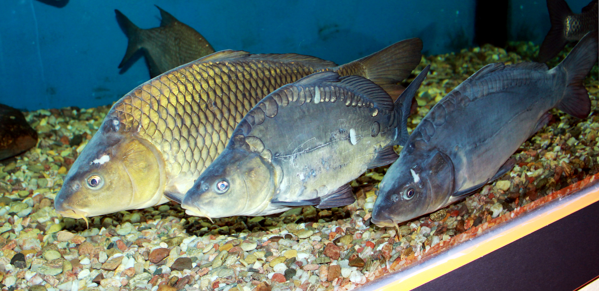

Карась
Кара́сь (Carassius) — рід риб родини коропових. Спинний плавець довгий. Тіло високе з товстою спиною, помірно стисле з боків. Луска велика й гладка на дотик. Забарвлення варіює в залежності від місця проживання. Карась золотий може досягати довжини тіла понад 50 см і маси понад 3 кг, карась сріблястий — довжини 40 см і маси до 2 кг. Статевої зрілості карась досягає на 3-4-річному році. Нерест навесні, ікра (до 300 тис.) відкладається на рослинність. У місцях з суворим кліматом карасі впадають у зимову сплячку, при цьому витримує повне промерзання водойми до дна. Харчуються карасі рослинністю, дрібними безхребетними, зоопланктоном, зообентосом і детритом. Мешкають виключно в болотистих і долішніх, озерах та річках, в гірських озерах і взагалі в гірських місцевостях карась є досить рідкісним явищем. Карась — дуже живуча риба, тому дрібного Карасика часто використовують при ловлі щуки в якості живця. Карасі — промислові риби та об'єкт ставкового господарства.
Короп

Ко́роп звича́йний (Cyprinus carpio) — поширена прісноводна промислова риба родини коропових. Зазвичай
характеризується як вид-вселенець, що походить з Азії. Інтродукований до багатьох районів світу, вдало
натуралізувався в водоймах Європи. Одомашнена форма цієї риби є одною з найпоширеніших промислових риб в
рибних господарствах помірного поясу, декоративною формою одомашненого коропа є парчевий короп.
Натуралізовані у «диких» водоймах коропи мають певні зовнішні відмінності від «ставкових» форм
коропа, через це у деяких регіонах України прижилась окрема, запозичена з російської традиції, назва для
здичавілих форм — «сазан» (рос. Сазан, тур. Sazan).
Довжина тіла коропа — до 1 м, жива маса досягає 20 кг і більше. Найбільший з відомих коропів важив
близько 118 кг (хоча ніде не зазначено, що це був саме короп звичайний).
Тіло товсте, спина широка. Плавці - від світло-коричневого та червоного до чорного кольору. Луска
може бути різних розмірів та кольору. Є різновиди, лише частково вкриті лускою (дзеркальний короп), або
зовсім без луски.
Короп досягає статевої зрілості на 3-5-му році життя. Нерест у травні за температури води 17 °C.
Плодючість понад 800 тис. ікринок, які відкладає в неглибоких ділянках на трав'янисті рослини.
Мальки живляться інфузоріями, дрібними ракоподібними, згодом — личинками комах, червами, молюсками,
рідко рослинами; дорослі коропи — всеїдні.
Лящ
Лящ (Abramis brama) — вид риб родини коропових (Cyprinidae), ряду коропоподібних (Cypriniformes).
Відноситься до монотипового роду Лящ (Abramis) .
Забарвлення ляща змінюється в залежності від віку риби, кольору грунту і води у водоймі. Дрібний лящ
сіро-сріблястий, у старшому віці темніє і набуває золотистий відлив. У торф'яних озерах лящ має бурий
колір. Всі плавці у ляща сірі, в анальному плавці 23-30 гіллястих променів. Лящ досягає довжини 45 см,
ваги 2,5-3 кг; живе до 20 років, але зазвичай менше. У південних районах зростає він швидко, статевої
зрілості досягає у 3-4 роки, при довжині близько 25 см. У північних озерах і водосховищах статевозрілим
стає в 5-8 років, при довжині 30 см і більше, очеретяний лящ дозріває в 3 роки, маючи довжину 12-15 см.
Сом
Сом звичайний, або європейський (Silurus glanis) — риба з роду сом (Silurus), ряду сомоподібних
(Siluriformes). Прісноводна донна річкова риба, що живе на глибоких ділянках річок, глибоких протоках і
старицях, в озерах і водосховищах, також у солонуватих водах лиманів. Найбільша прісноводна риба в
Європі. Цінна промислова риба, чисельність якої різко скоротилася протягом останніх десятиліть.
За зовнішніми ознаками сома легко відрізнити від усіх інших риб. У нього величезна тупа голова,
велика паща зі «щіткою» — кількома рядами дрібних загнутих всередину зубів. Сом має двоє вусів на
верхній щелепі і чотири вусики — на нижній. Вуса є своєрідними щупальцями, за допомогою яких сом
відшукує їжу навіть у темряві. Очі в сома — дуже маленькі. Сом має довгий анальний плавець, що
переходить у довгий хвостовий плавець. Жировий плавець відсутній, непарні плавці не мають шипів. Тіло
зверху темне, черево — світле. Сом має окрас, відповідний типові ґрунту, на якому він мешкає: наприклад,
«піщані» соми — світліші, «кам'яні» — темніші. Іноді зустрічаються соми-альбіноси.
Тіло голе, без луски, покрите шаром слизу.
Сом звичайний — не тільки найбільший за розміром у роді сом, але й одна з найбільших прісноводних
риб на планеті та найбільша прісноводна риба в Україні. Довжина тіла сомів може сягати 5 м, вага — 300
кг у віці 80-100 років[4][5]. Через велике промислове значення, активний вилов та браконьєрство, випадки
вилову сомів, більших за 150 кг, останнім часом не відомі.
Краснопірка
Краснопірка червоноперка, червонопірка (Scardinius erythrophthalmus) — риба родини коропових. Наукова
назва виду, S. erythrophthalmus, перекладається з давньої грецької як "червоні очі": грец. ερυθρο -
червоний, грец. όφθαλμός - око (про походження родової назви див. Краснопірка).
Довжина до 36 см, вага до 400 — 500 г, іноді до 2 кг. Тіло високе, сплюснуте з боків, луска відносно
крупна. Голова невелика, рот верхній косий, зуби двохрядні. Спинний плавець сильно зміщений назад. Спина
темно-бура з зеленуватим відтінком, боки жовтувато-золотисті, черево сріблясте. Спинний та грудні плавці
сірі з червоними верхівками, всі інші яскраво червоні. Очі жовтого кольору.
Щука

Щука звичайна (Esox lucius) — вид м'ясоїдних риб роду щук (Esox). Ці риби — типові мешканці солонуватих
і прісноводних водоймищ північної півкулі (тобто мають голарктичне розповсюдження).
Щука звичайна може досягати в довжину більш ніж 1,5 метра, ваги — 35 кг (за деякими свідченнями
навіть більше), самиці завжди більші за самців. Найбільша щука, виловлена в Україні, важила близько 18
кілограмів. Піймали її неводом у Люб’язівському (малому) озері восени 1967 року рибалки місцевого
колгоспу імені Леніна Любешівського району Волинської області. Довжина рибини перевищувала зріст
рибалок. Так як гігантську щуку спіймали напередодні дня працівників сільського господарства, то на
слідуючий день її демонстрували у Любешові на районній виставці колгоспів.[1]
Забарвлення тіла плямисто-смугасте, світлі смуги проходять вздовж та поперек тіла. Залежно від
характеру та ступеню розвитку рослинності прибережної зони щуки можуть мати сірувато-зеленуватий,
жовтуватий або сіро-бурий колір, спина темна, черево білувате, з сірими цятками; в деяких озерах
зустрічаються сріблясті щуки. Спинний, анальний та хвостовий плавці бурі, з чорними плямками, грудні та
черевні — жовтувато-червоні.
Самців і самиць ззовні можна відрізнити за формою статево-сечового отвору, котрий у самців має
вигляд вузької довгастої щілини, забарвленої в колір черева, а у самиць — овального поглиблення,
облямованого валиком рожевого кольору.
Тіло щуки має видовжену, стрілоподібну форму. Голова сильно видовжена, нижня щелепа видається
вперед. Зуби на нижній щелепі мають різний розмір і слугують для захвату жертви. Зуби на інших кістках
ротової порожнини дрібніші, спрямовані гострими кінцями в горлянку і можуть занурюватись в слизову
оболонку, що встеляє ротову порожнину та горлянку. Завдяки цьому здобич легко проковтується, а якщо вона
намагається вирватись, глоткові зуби підіймаються та утримують жертву.
Для щук характерна зміна зубів на нижній щелепі: внутрішня поверхня щелепи вкрита м'якою тканиною,
під нею розташовані навскісні ряди з 2-4 заміщуючих зубів, які примикають ззаду до кожного діючого і
утворюють з ним єдину групу (зубну сім'ю). Коли робочий зуб виходить із вжитку, на його місце стає своєю
основою сусідній заміщуючий зуб тієї ж сім'ї. Спочатку він хитається, але потім щільно приростає основою
до кістки щелепи і укріплюється. Зуби у щуки змінюються не одночасно. В один і той же час одні зубні
групи закінчуються на краю щелепи старим зубом, що вже розсмоктується, інші — міцним робочим, треті — ще
рухливим молодим. В деяких водоймах у щук зміна зубів посилюється протягом певних сезонів, і тоді щука в
цих водоймах перестає брати крупну здобич.